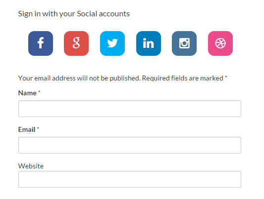
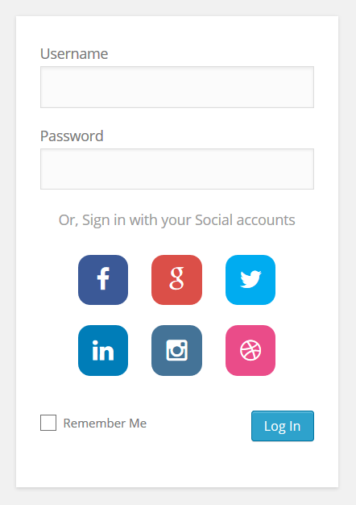

If you are a designer or a creative person, please consider contributing back to this project by improving this section and by sharing new customizations for WSL Widget.
Widget Themes Advanced Customization
The WSL Widget do not have ready-to-use themes per se. Here we only list a number of customizations you may find useful to better fit the widget to your website theme. The new changes to WSL 2.2.1 made the Widget more flexible than before and it can be now fully customized to a great extent.
1. Default WSL Theme
The default WSL widget theme is plain and simple, and it comes with two set of icons to display:
- WPZOOM Social Networking Icon Set by WPZOOM, licensed under a Creative Commons Attribution-Share Alike 3.0.
- Vector Social Media Icons, by IconDock.com. Free to use for whatever purposes.

|

|
The default widget style can be found on WSL css file assets/css/style.css. This default style is the following :
.wp-social-login-provider-list { padding: 10px; }
.wp-social-login-provider-list a {text-decoration: none; }
.wp-social-login-provider-list img { border:0 none; }
2. Colourful layout

|

|
To achieve this look, you have to select an icon set first on Widget > Basic Settings, then insert the CSS bellow into Widget > Custom CSS text area (or add it to your website theme files).
To change widget background colors (black:background-color: #000000;, gray:background-color: #f9f9f9;), there are a number of color-pickers you can found online. We recommend to use ColorHexa.com, because it is simple to use color-tool and provide information about any color. ColorHexa also generate matching color schemes, so you will be able to know what colors best suit with the one you chose.
.wp-social-login-connect-with {
font-size: 15px;
padding: 10px;
box-sizing: border-box;
color: #ffffff;
background-color: #000000; /* to pick another color http://www.colorhexa.com/000000 */
border-top-left-radius: 4px;
border-top-right-radius: 4px;
}
.wp-social-login-provider-list {
margin-bottom: 20px;
padding: 15px;
box-sizing: border-box;
background-color: #f9f9f9; /* to pick another color http://www.colorhexa.com/f9f9f9 */
border-bottom-left-radius: 4px;
border-bottom-right-radius: 4px;
}
3. Flat layout

To achieve this look, you have set Widget > Basic Settings > Social icon set to "None, display providers names instead of icons", then insert the CSS bellow into Widget > Custom CSS text area (or add it to your website theme files).
As stated in 2. Colourful layout, to change widget buttons colors, there are a number of color-pickers you can found online and we recommend to use ColorHexa.com.
/*
* Customize 'Connect with:' label
*/
.wp-social-login-connect-with {
text-align: center;
font-size: 22px;
margin-bottom: 5px;
}
.wp-social-login-provider-list {
text-align: center;
margin-bottom: 15px;
}
/*
* Customize the providers buttons
*/
.wp-social-login-provider {
width: 120px;
display: inline-block;
padding: 5px;
margin: 8px;
font-size: 18px;
font-weight: bold;
text-align: center;
text-decoration: none;
color: #ffffff !important;
}
.wp-social-login-provider:hover { color: #ffffff !important; }
/*
* Set the background color for each provider buttons
*/
.wp-social-login-provider-facebook { background-color: #3b5998; }
.wp-social-login-provider-twitter { background-color: #00acee; }
.wp-social-login-provider-google { background-color: #dd4b39; }
.wp-social-login-provider-yahoo { background-color: #7f2db5; }
.wp-social-login-provider-linkedin { background-color: #0e76a8; }
.wp-social-login-provider-steam { background-color: #171515; }
/*
* Changing the background color for each button on mouse hover
*/
.wp-social-login-provider-facebook:hover { background-color: #2f4679; }
.wp-social-login-provider-twitter:hover { background-color: #0089bd; }
.wp-social-login-provider-google:hover { background-color: #b03b2d; }
.wp-social-login-provider-yahoo:hover { background-color: #9652c4; }
.wp-social-login-provider-linkedin:hover { background-color: #0b5e85; }
.wp-social-login-provider-steam:hover { background-color: #171515; }
If you want to give the button more depth, you may add this bit of style as well:
.wp-social-login-provider {
box-shadow: 0 -1px 0 rgba(255,255,255,0.1) inset;
border-radius: 5px;
}
4. Custom Icon Set
If you don't want to use the default icons sets of WSL widget, then you can change them as you like as show on the pictures bellow. To do this, first, you will have to find some free sign-with buttons over the web, or to buy ones.

|

|
Next, we will have to host these buttons online. For this example we choose to host them in the wordpress media library. See the pictures bellow if you're not familiar with how it works:
- Go to your wordpess dashboard, then Media > Add New and upload your buttons,
- Once uploaded, click on the shown buttons thumbnails to open the Attachment Details popup and copy their urls, as we will need them later.

|

|
After that,
- Set Widget > Basic Settings > Social icon set to "None, display providers names instead of icons",
- Edit the CSS bellow, and change the buttons background sources (
background-image: url( "INSERT_BUTTON_URL_HERE" );) with the ones you have uploaded. - finally, insert that into Widget > Custom CSS text area (or add it to your website theme files).
/*
* Customize 'Connect with:' label
*/
.wp-social-login-connect-with {
text-align: center;
font-size: 16px;
margin-bottom: 5px;
}
.wp-social-login-provider-list {
text-align: center;
margin-bottom: 15px;
}
/*
* Customize the providers buttons
*/
.wp-social-login-provider, .wp-social-login-provider:hover {
display: inline-block;
height: 22px;
width: 150px;
margin: 5px;
color: transparent; /* this will hide the providers names */
}
/*
* Set the providers buttons urls.
*
* Note: change these urls with yours
*/
.wp-social-login-provider-facebook {
background-image: url( "http://mywebsite.com/wp-content/uploads/2014/09/signin_with_facebook.png" );
}
.wp-social-login-provider-twitter {
background-image: url( "http://mywebsite.com/wp-content/uploads/2014/09/signin_with_twitter.png" );
}
.wp-social-login-provider-linkedin {
background-image: url( "http://mywebsite.com/wp-content/uploads/2014/09/signin_with_linkedin.png" );
}
5. Font-Awesome Icons
Head-up This example will requires a little bit more of work by comparison to previous ones, but the process can be fun and the result is definitely worth it.

1. First thing to know, those awesome providers icons are part of a well known, open and free to use icon pack called Font Awesome. And we will be using them to replace the default WSL icons.
While few WordPress themes come with this pack already included, other do not. On the latter case we will have to integrate it into the web site manually. The easiest way to do that, is to install then activate this plugin: https://wordpress.org/plugins/better-font-awesome/.
Advanced users may simply import the style. eg: @import("http://fortawesome.github.io/Font-Awesome/assets/font-awesome/css/font-awesome.css").
Note: Not all the supported providers by WSL have icons in Font Awesome, see : http://fortawesome.github.io/Font-Awesome/icons/#brand.
2. For this theme, we will need to create a Hook to customize the Widget HTML. This hook will go into you theme functions.php file. If you're not familiar with the process, see : https://www.youtube.com/watch?v=N9VNXh506ys.
function wsl_use_fontawesome_icons( $provider_id, $provider_name, $authenticate_url )
{
?>
<a
rel = "nofollow"
href = "<?php echo $authenticate_url; ?>"
data-provider = "<?php echo $provider_id ?>"
class = "wp-social-login-provider wp-social-login-provider-<?php echo strtolower( $provider_id ); ?>"
>
<span>
<i class="fa fa-<?php echo strtolower( $provider_id ); ?>"></i> Sign in with <?php echo $provider_name; ?>
</span>
</a>
<?php
}
add_filter( 'wsl_render_auth_widget_alter_provider_icon_markup', 'wsl_use_fontawesome_icons', 10, 3 );
3. Insert the CSS bellow into Widget > Custom CSS text area (or add it to your website theme files):
/*
* Create a button effect
*
* Based on bootstrap 3.w/e
*/
.wp-social-login-provider {
display:inline-block;
padding:6px 12px;
margin:5px;
font-size: 17px;
font-weight: 700;
line-height:1.428571429;
text-align:center;
white-space:nowrap;
vertical-align:middle;
cursor:pointer;
border:1px solid transparent;
border-radius:4px;
-webkit-user-select:none;
-moz-user-select:none;
-ms-user-select:none;
-o-user-select:none;
user-select:none
background-color: #fff;
border-color: #ccc;
color: #333;
width: 300px;
}
/*
* Change the button background color on mouse hover
*/
.wp-social-login-provider:hover, .wp-social-login-provider:focus{
background-color: #ebebeb;
border-color: #ababab;
text-decoration:none
}
6. iOS 7 squircles , font awesome are awesome
iOS 7 squircles is highly inspired by the @thecodeplayer work — TheCodePlayer.com is great way to learn front end technologies like HTML5, CSS3, Javascript, Jquery easily, quickly and interactively.
|  |  |
1. For this theme we also need Font Awesome. If you don't have already integrated into your website theme, refer to 5. Font-Awesome Icons.
2. Like we did in that theme (5. Font-Awesome Icons), we will also have to create a hook to customize the Widget HTML:
function wsl_use_squircles_icons( $provider_id, $provider_name, $authenticate_url )
{
?>
<a
rel = "nofollow"
href = "<?php echo $authenticate_url; ?>"
data-provider = "<?php echo $provider_id ?>"
class = "wp-social-login-provider wp-social-login-provider-<?php echo strtolower( $provider_id ); ?>"
>
<i class="fa fa-<?php echo strtolower( $provider_id ); ?>"></i>
</a>
<?php
}
add_filter( 'wsl_render_auth_widget_alter_provider_icon_markup', 'wsl_use_squircles_icons', 10, 3 );
3. Insert the CSS bellow into Widget > Custom CSS text area (or add it to your website theme files):
/*
* Customize 'Connect with:' label
*/
.wp-social-login-connect-with {
font-size: 16px;
margin-bottom: 5px;
}
/*
* Customize icons based on @thecodeplayer's tutorial
*
* http://thecodeplayer.com/walkthrough/css3-squircles
*/
.wp-social-login-provider-list i {
display: block;
font-size: 24px;
line-height: 50px; width: 50px;
text-align: center;
border-radius: 12px;
}
.wp-social-login-provider-list a {
text-decoration: none;
color: white;
display: inline-block;
margin: 10px;
border-radius: 12px;
position: relative;
}
.wp-social-login-provider-list a:hover{
text-decoration: none;
color: white;
}
/*
* Create fish-eye shapes
*/
.wp-social-login-provider-list a:before, .wp-social-login-provider-list a:after {
content: '';
position: absolute; left: 0; top: 0;
width: 100%; height: 100%;
background: inherit;
border-radius: 100%;
transform: scaleX(2) scaleY(1.05);
clip: rect(0, 33px, 50px, 17px);
z-index: -1;
}
/*
* Duplicating the :before element and rotating it 90deg and swapping the X/Y transforms
*/
.wp-social-login-provider-list a:after {
transform: scaleY(2) scaleX(1.05) rotate(90deg);
}
/*
* Set the background color for each provider buttons
*/
.wp-social-login-provider-twitter i {background: #00ACF0;}
.wp-social-login-provider-facebook i {background: #3B5997;}
.wp-social-login-provider-google i {background: #DB4F48;}
.wp-social-login-provider-instagram i {background: #447397;}
.wp-social-login-provider-linkedin i {background: #007DB8;}
.wp-social-login-provider-dribbble i {background: #ea4c89;}
7. Disproportionate layout , metro like look n feel
This section is incomplete..
Please, do not submit issues here.
This comment section is for a general question and feedback. If you want to report a bug, please refer to the Support section.